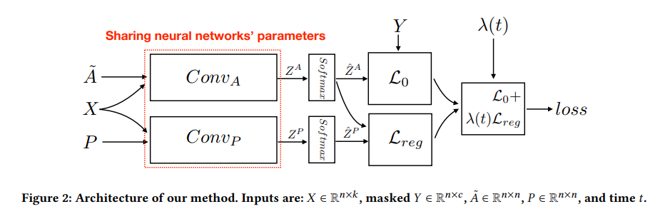

@ARTICLE{4700287,
author={Scarselli, Franco and Gori, Marco and Tsoi, Ah Chung and Hagenbuchner, Markus and Monfardini, Gabriele},
journal={IEEE Transactions on Neural Networks},
title={The Graph Neural Network Model},
year={2009},
volume={20},
number={1},
pages={61-80},
doi={10.1109/TNN.2008.2005605}}[GNN] 논문 정리 (~ing)
GNN
GNN으로 할 수 있는 것
- Node Classification
- Node embedding을 통해 점 분류 (인용 네트워크, Reddit게시물, Youtube동영상)
- Link Prediction
- 그래프 점들 사이에 관계 파악 및 두 점 사이 연관성 예측
- Graph Classification
- 그래프 전체 여러가지 카테고리로 분류
GNN변천사

출처: https://tootouch.github.io/research/gnn_summary/
https://arxiv.org/pdf/1901.00596.pdf
GCN
REF
https://wonbae.github.io/2021-02-26-Graph9-GNN/
https://thejb.ai/comprehensive-gnns-3/ \(\star\)
https://github.com/heartcored98/Standalone-DeepLearning/tree/master
https://ahjeong.tistory.com/15
논문 종류
Recurrent Graph Neural Network
Spatial Convolutional Network
Spectral Convolutional Network
GCN변천사

1
1-1
https://arxiv.org/ftp/arxiv/papers/1812/1812.08434.pdf
Propagation Modeule - Recurrent Operator - Convergence - GNN
Graph neural networks: A review of methods and applications
- popular platforms for graph computing |Platform|Link|Reference| |—|—|—| |PyTorch Geometric |https://github.com/rusty1s/pytorch_geometric| Fey and Lenssen (2019)| |Deep Graph Library |https://github.com/dmlc/dgl |Wang et al. (2019b)| |AliGraph |https://github.com/alibaba/aligraph |Zhu et al. (2019a)| |GraphVite |https://github.com/DeepGraphLearning/graphvite |Zhu et al. (2019b)| |Paddle Graph Learning |https://github.com/PaddlePaddle/PGL|| |Euler |https://github.com/alibaba/euler|| |Plato |https://github.com/tencent/plato|| |CogDL |https://github.com/THUDM/cogdl/|| |OpenNE h|ttps://github.com/thunlp/OpenNE/tree/pytorch||
1-2
https://ieeexplore.ieee.org/document/4700287
2
2-1
https://arxiv.org/abs/1609.02907
‘Semi-Supervised Classification with Graph Convolutional Networks’
2-2
참고자료
- F. Scarselli, M. Gori, “The graph neural network model,” IEEE Transactions on Neural Networks, 2009
- https://ieeexplore.ieee.org/stamp/stamp.jsp?arnumber=4700287
- Z. Wu, S. Pan, F. Chen, G. Long, C. Zhang, Philip S. Yu, “A Comprehensive Survey on Graph Neural Networks”, arXiv:1901.00596
- https://ieeexplore.ieee.org/stamp/stamp.jsp?arnumber=9046288
- T. N. Kipf and M. Welling, “Semi-supervised classification with graph convolutional networks,” in Proc. of ICLR, 2017
- https://arxiv.org/pdf/1609.02907.pdf%EF%BC%89
- J. Gilmer, S. S. Schoenholz, P. F. Riley, O. Vinyals, and G. E. Dahl, “Neural Message Passing for Quantum Chemistry”, in Proc. of ICML, 2017
- http://proceedings.mlr.press/v70/gilmer17a/gilmer17a.pdf
- 이건 화학적 분자구조를 뉴럴로 한거같은데,, 약간 참고자료용??
- D. Xu, Y. Zhu, C. B. Choy, and L. Fei-Fei, “Scene graph generation by iterative message passing,” in Proc. of CVPR, 2017
- https://openaccess.thecvf.com/content_cvpr_2017/papers/Xu_Scene_Graph_Generation_CVPR_2017_paper.pdf
- 시각적 기반이 되는 이미지 그래픽 구조
- 입력 이미지로부터 구조화된 장면 표현하는 모델
- J. Johnson, A. Gupta, and L. Fei-Fei, “Image generation from scene graphs,” in Proc. of CVPR, 2018
- 그래프 모델을 사용한 이미지 생성
D. Teney, L. Liu and A. van den Hengel, “Graph-Structured Representations for Visual Question Answering”, in Proc. of CVPR, 2017
B. Sanchez-Lengeling, J. N. Wei, B. K. Lee, R. C. Gerkin, A. Aspuru-Guzik, and A. B. Wiltschko, “Machine Learning for Scent: Learning Generalizable Perceptual Representations of Small Molecules”, arXiv: 1910.10685
R. van den Berg, T. N. Kipf, and M. Welling, “Graph Convolutional Matrix Completion”, arXiv:1706.02263
Alet, Ferran, et al. “Graph element networks: adaptive, structured computation and memory.” International Conference on Machine Learning. PMLR, 2019.
- spatial processes가 없는 공간
Allamanis, Miltiadis, Marc Brockschmidt, and Mahmoud Khademi. “Learning to represent programs with graphs.” arXiv preprint arXiv:1711.00740 (2017).
그래프 신경망 입문 도서(Introduction to Graph Neural Networks)
- 지은이: 즈위안 리우, 지에 저우
1. 그래프 합성곱 네트워크
(1) 스펙트럼 방법(여러 가지 파동들의 집합)

출처: https://tootouch.github.io/research/gnn_summary/
- Spectral Convolutional Neural Network (Spectral CNN) 스펙트럼 네트워크
(Denton, Emily L., et al. “Exploiting linear structure within convolutional networks for efficient evaluation.” Advances in neural information processing systems 27 (2014).)
- 푸리에 영역에서 그래프 라플라시안의 고유 분해 계산
\[x \in {\mathbb R}, \theta \in {\mathbb R}^N, g_\theta=diah(\theta)\]
\[g_\theta \times x = U_{g_\theta}(\wedge)U^Tx\]
\[L=I_N-D^{-\frac{1}{2}}AD^{-\frac{1}{2}}=U \wedge U^T\]
U: L의 고유벡터로 이루어진 행렬, \(\wedge\): L의 고윳값으로 이뤄진 대각행렬
- Chebyshev Spectral Convolutional Neural Network(ChebNet)
거리가 K이하인 범위를 다루는 합성곱을 사용해 합성곱 신경망을 정의함->라플라시안 고유벡터 전부 계산 안해도 된다.
\[g_\theta = \sum_{i=0}^K \theta_i T_i(\tilde \wedge)\]
- 체비쇼프 다항식
\(T_k(x) = 2xT_{k-1}(x) - T_{k-2}(x)\)
\(T_0(x)=1, T_1(x) = x\)
- Graph Convolutional Network (GCN)
(https://arxiv.org/pdf/1706.02263.pdf)
https://arxiv.org/abs/1609.02907
ChebNet의 식에서 \(K=1, \lambda_{max}=2\)로 근사
\[g_\theta' \times x \approx \theta_0' x + \theta_1'(L-I_N)x = \theta_0' x - \theta_1' D^{-\frac{1}{2}}AD^{-\frac{1}{2}}x\]
- 위 식에서 \(\theta=\theta_0' = -\theta_1'\) 이라고 가정(오버피팅 방지)
\[g_\theta \times x \approx \theta(I_N + D^{-\frac{1}{2}}AD^{-\frac{1}{2}})x\]
- AGCN
- Li, Ruoyu, et al. “Adaptive graph convolutional neural networks.” Proceedings of the AAAI conference on artificial intelligence. Vol. 32. No. 1. 2018
(2) 공간 방법
- 공간적으로 가까운 이웃 노드에 직접 적용하는 합성곱 정의
- 뉴럴 FPS
논문:Convolutional Networks on Graphs for Learning Molecular Fingerprints
다른 차수의 노드에 다른 가중치 행렬 사용
\[x=h_v^{t-1} + \sum_{i=1}^{|N_v|}h_i^{t-1}\]
\[h_v^t = \sigma (x W_t^{|N_v|})\]
\(h_v^t\): t번째 층에서 노드 v의 임베딩
\(N_v\): 노드 v의 이웃 집합
\(W_t^{|N_v|}\): t번째 층에서 차수가 \(|N_V|\)인 노드의 가중치 행렬
차수별로 다른 행렬을 사용하므로ㅗ 노드 차수가 많은 큰 규모의 그래프에서 사용할 수 없다.
- PATCHY-SAN
논문:Learning Convolutional Neural Networks for Graphs
1. 노드 선택
- 모든 노드에서 단계 진행하지 않고 그래프 레이블링 통해 노드의 순서를 정하고 그 순서를 기반으로 노드를 W개 선택
2. 이웃 모으기
각 단계에서 선택한 노드 각각을 기준으로 수용 영역을 만든다.
너비 우선 선택(breadth-first search)을 통해 k개를 뽑는다.
거리가 1인 노드를 고르고 부족하면 거리를 늘려서 가까운 노드 k개를 고른다.
3. 그래프 정규화
수용 영역에 있는 노드의 순서를 매겨서 순서가 있는 그래프 공간을 벡터 공간으로 바꾼다.
\(\star\) 구조적으로 비슷한 역할을 하는 노드는 다른 그래프에 있어도 비슷한 위치로 여긴다.
4. 합성곱 구조
-정규화된 이웃을 수용 영역으로 노드와 에지 속성을 채널로 한다.
- Diffusion-Convolutional Neural Network(DCNN:확산 합성곱 신경망)
논문: Diffusion-Convolutional Neural Networks
추이행렬(transition matrix) 사용: 노드의 이웃 정의
\(P\): 그래프 인접행렬 A로부터 얻은 차수 정규화 추이행렬
\(P*\): 행렬 P의 거듭제곱근수 \(\{P, P^2, \dots, P^K\}\)로 이뤄진 \(N \times K \times N\)(N은 노드수) 텐서
\[H=\sigma(W^c \odot P^*X)\]
\(X\): \(N \times F\)입력 특징 텐서
\(X\)에 \(P^*\)를 곱해서 각 원소는 K홉 그래프 확산을 뜻하는 \(K \times F\) 행렬인 확산 합성곱 표현으로 바뀜
- DGCN
논문: Dual Graph Convolutional Networks for Graph-Based Semi-Supervised Classification
그래프의 부분 일관성과 전체 일관성 모두 고려
합성곱 그래프 2개와 비지도 손실 함수 2개 사용
- 첫번째 합성곱 네트워트
\[Z={\tilde D}^{-\frac{1}{2}}{\tilde A}{\tilde D}^{-\frac{1}{2}}X \Theta\]
\(\tilde A= A+I_N\)
C: 입력 채널 수
\(X \in {\mathbb R}^{N \times C}\): 신호
\(\Theta \in {\mathbb R}^{C \times F}\): 필터 파라미터 행렬
\(Z \in {\mathbb R}^{N \times C}\): 합성곱 적용한 신호 행렬
- 가까운 노드는 비슷한 레이블을 가질 가능성이 높다는 것을 의미하는 부분 일관성: \(\text{Conv}_A\)
- 두번째 합성곱 네트워크
- 인접행렬 대신 양의 점별 상호 정보(PPMI:Positive Pointwise Mutual Information) 행렬
\[H'=\sigma(D^{-\frac{1}{2}}_P X_P D_P^{-\frac{1}{2}} H \Theta)\]
\(X_P\): PPMI행렬
\(D_P\): \(X_P\)의 대각행렬
- 비슷한 내용을 가진 노드는 비슷한 레이블을 가질 가능성이 높다는 것을 의미하는 전체 일관성: \(\text{Conv}_P\)
- 손실 함수1
\[L=L_0(\text{Conv}_A)+\lambda(t)L_{reg}(\text{Conv}_A,\text{Conv}_P)\]
\(\lambda(t)\): 두 손실 함수의 중요성 조절하는 가중치
\(L_0(\text{Conv}_A)\): 주어진 노드 레이블에 대한 지도 손실 함수
- 크로스 엔트로피 에러를 사용해 \(L_0(\text{Conv}_A)\) 계산
\[L_0(\text{Conv}_A)= -\frac{1}{|y_L|} \sum_{l \in y_L} \sum_{i=1}^c Y_{l,i} ln(\hat Z_{l,i}^A)\]
\(y_L\): 학습 데이터의 인덱스 집합
\(Y\): 정답값
- 손실 함수2
\[L_{reg}(\text{Conv}_A, \text{Conv}_P) = \frac{1}{n} \sum_{i=1}^n ||\hat Z_{i,:}^P - \hat Z_{i,:}^A||^2\]
- 모델 구조

- LGCN
논문:Large-Scale Learnable Graph Convolutional Networks
Learnable Graph Convolutional Network: 학습 가능한 그래프 합성곱 네트워크
https://github.com/HongyangGao/LGCN
:학습 가능한 그래프 합성곱 층(LGCL:Learnable Graph Convolutional Layer)+부분 그래프 합성 전략
- LGCL
관련 높은 k개의 특징 요소를 얻기 위해서 노드의 이웃 행렬에 최대 풀링을 적용 후 1차원 CNN을 적용해 은닉 표현 계산
전파단계
\[\hat H_t = g(H_t, A, k)\]
\[H_{t+1}=c (\hat H_t)\]
\(A\): 인접행렬
\(g()\): 가장 큰 노드 k개 뽑는 연산
\(c()\): 일반적인 1차원 CNN
- 예시

??? 예시를 봐도 잘 모르겠다..
- MoNET
- 예시
GCNN(geodesic CNN)
ACNN(anisotropic CNN)
GCN
DCNN
- 가중치 함수
\[D_j(x)f = \sum_{y \in N_x} w_j(u(x,y))f(y)\]
노드와 이웃 간의 가짜 좌표 \(u(x,y)\)를 계사나고 이를 이용해 가중치 함수를 정의한다.
노드의 이웃에 각각 가중치를 두는 방법
\(u\)와 \(w(u)\)를 어떻게 정의하는지에 따라 모델을 정의할 수 있다.
- GraphSAGE
논문:Representation learning on graphs: Methods and applications
논문:Inductive representation learning on large graphs
근처에 있는 노드의 특징을 샘플링하고 모아서 임베딩 계산
- 전파 단계
\[h_{N_v}^t = \text{AGGREGATE}_t(\{h_u^{t-1}, \forall u \in N_v \})\]
\[h_v^t = \sigma(W^t \cdot [h_v^{t-1}||h_{N_v}^t])\]
이웃 노드를 모두 사용하지 않고 정해진 개수만 골고루 샘플링
GRN
Gated Graph Neural Network(GGNN:게이트 그래프 신경망)
논문:Gated graph sequence neural networks
https://www.cs.toronto.edu/~yujiali/files/talks/iclr16_ggnn_talk.pdf
https://github.com/chingyaoc/ggnn.pytorch
https://katefvision.github.io/LanguageGrounding/Slides/27.pdf
정해진 횟수에 대한 순환 신경망을 풀고 시간을 통해 역전파해서 그레이디언트 계산
Gated Graph Sequence Neural Network(GGS-NN)
Tree-LSTM
논문:Improved semantic representations from tree-structured long short-term memory networks)
1. Child-Sum Tree-LSTM
\(\tilde h_v^{t-1} = \sum_{k \in N_v} h_k^{t-1}\)
입력 게이트 \(i_v^t = \sigma(W^ix_v^t + U^i {\tilde h_v^{t-1}} + b^i)\)
망각 게이트 \(f^t_{vk} = \sigma(W^f x_v^t + U^fh_k^{t-1} + b^f)\)
출력 게이트 \(o_v^t = \sigma(W^ox_v^t + U^o {\tilde h_v^{t-1}} + b^o)\)
\(u_v^t = tanh(W^ux_v^t + U^u {\tilde h_v^{t-1}} + b^u)\)
메모리 셀 \(c_v^t = i_v^t \bigodot u_v^t + \sum_{k \in N_v} f_{vk}^t \bigodot c_k^{t-1}\)
은닉 상태 \(h_v^t = o_v^t \bigodot tahn(c_v^t)\)
2. N-ary Tree-LSTM
- 트리의 각 노드 자식 수가 K보다 작고 자식들에게 1부터 K까지 순서를 매길 때 사용
\(i_v^t = \sigma(W^i x_v^t + \sum_{l=1}^K U_l^i h_{vl}^{t-1} + b^i)\)
\(f_{vk}^t = \sigma(W^f x_v^t + \sum_{l=1}^K U_{kl}^f h_{bl}^{t-1} + b^f)\)
\(o_v^t = \sigma(W^o x_v^t + \sum_{l=1}^K U_t^o h_{vt}^{t-1} + b^o)\)
\(u_v^t = tanh(W^ux_v^t + \sum_{l=1}^K U_l^u h_{vl}^{t-1} + b^u)\)
\(c_v^t = i_v^t \bigodot u_v^t + \sum_{l=1}^K f_{bl}^t \bigodot c_{vl}^{t-1}\)
그래프 LSTM
Sentence-LSTM(S-LSTM)
텍스트를 그래프로 변환하고 그래프 LSTM을 이용해 학습
논문:Sentence-state LSTM for text representation
음.. 이건 약간 자연어 처리 쪽..